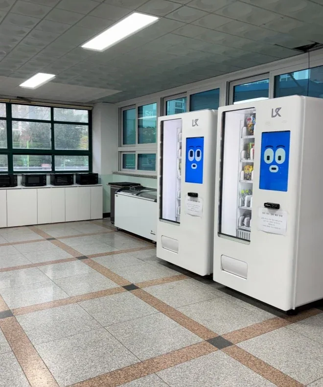
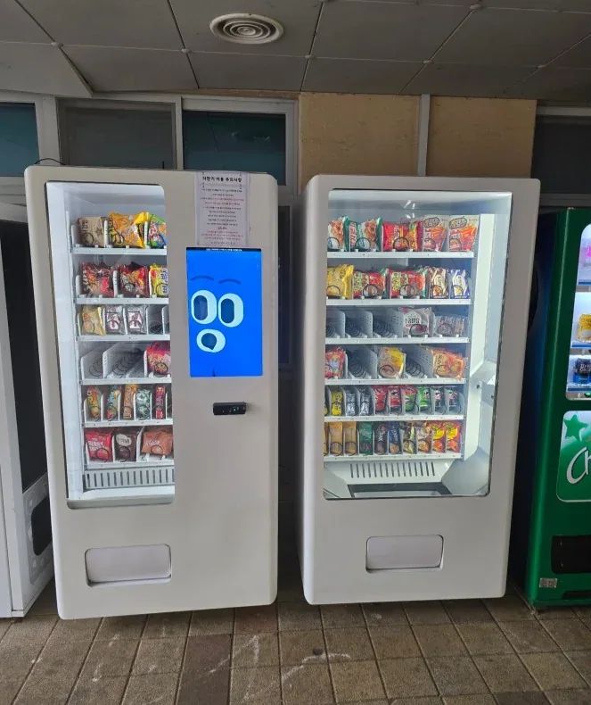

학교 내부 설치
학교 내 공용 공간에 배치된 멀티자판기 사례
학교·학원에 자판기를 설치할 때는 학생 이용 시간, 판매 가능 상품, 기기 앞 안전한 통행 공간, 상품 보충 담당자까지 함께 고려해야 합니다.
학교와 학원에서는 쉬는 시간과 점심시간처럼 짧은 시간에 이용이 집중될 수 있습니다. 생수·음료·포장 간식 등 학교 정책과 이용자 특성에 맞는 품목을 먼저 선정하고, 상품 규격에 따라 트레이 구성을 검토하는 것이 좋습니다.
멀티자판기는 한 대의 기기에서 여러 상품을 구성할 수 있지만, 판매 품목의 제한 여부와 결제 방식, 위치별 혼잡 가능성은 학교 측과 미리 확인해야 합니다.
아래 사진은 MTS해원이 제공한 설치 사례 자료에서 가져온 실제 현장 사진입니다. 장소마다 제품 구성과 설치 조건은 달라질 수 있습니다.
학교 내 공용 공간에 배치된 멀티자판기 사례

이용 동선과 기기 간격을 함께 살펴볼 수 있는 설치 사례

상품 구성을 달리한 기기의 배치와 접근성을 참고할 수 있는 사진
학교명과 설치 예정 공간의 위치, 희망 상품, 사용 가능한 전기·통신 조건, 구입 또는 공급 방식을 확인하면 상담이 더 구체적으로 진행됩니다. 정확한 비용은 제품과 설치 환경에 따라 달라집니다.
기기를 몇 대 설치할지 고민된다면 이용 예상 인원, 판매 품목의 종류, 상품 보충 주기 등을 먼저 정리하는 것이 좋습니다.